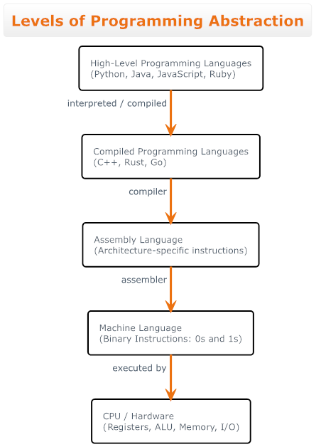

Programovací jazyk
Python
Jednoduchý. Čitelný. Praktický.
🧑💻Co je Python?
- Vysoce úrovňový programovací jazyk
- Vytvořený s důrazem na čitelnost
- Interpretovaný (nekompiluje se)
- Open-source a zdarma
👶Jak je starý Python?👴
<15 let
35 let
55 let
>75 let
📈Trendy

🤑Python se používá tam, kde je chyba drahá


Používají Python kvůli:
- čitelnosti
- menšímu počtu bugů
- rychlému prototypování
🌍Python je „lepidlo světa“
🪢Python nevznikl jako rychlý jazyk, ale jako jazyk, který spojuje ostatní věci.
📞V praxi Python často volá C/C++ kód, aniž si to uživatel uvědomuje.
📦Většina
„rychlého pythonu“
není python


Všechny jsou napsané v C/C++
📃Python nemá kompilátor (tak úplně)
- se nekompiluje do strojového kódu
- ale do bytecode
- který běží na
Python Virtual Machine (PVM)
žádný main(), linker a hlavičky
🔐Global Interpreter Lock (GIL) nejkontroverznější věc v Pythonu


- dovoluje běžet jen jednomu vláknu Python kódu
- i na vícejádrovém CPU...
“threading ≠ paralelismus”
❌threading ✅multiprocessing
🏠Python byl navržen tak, aby se četl nahlas
Python je jediný mainstream jazyk, kde:
for x in data: # data = [52.3, 28.4, 0, 1.5, -142.4, 284.2]
if x > 0:
print(x)
… opravdu odpovídá tomu, jak bys to řekl/a lidsky.
žádné {}
žádné ;
odsazení má význam
🔋Python má
„baterie v balení“
Standardní knihovna je obrovská:
- práce se soubory
- JSON, CSV, XML
- HTTP server
- regulární výrazy
- multiprocessing
- testování
import a hotovo
😉Python je extrémně tolerantní
(a to je problém)
- netrestá hned
- dovolí ti spoustu věcí
- chyby často najdeš až za běhu
x = 5 # int ☺️
x = "hello" # string 🤨
✅ Skvělé pro začátek
💣 Nebezpečné ve velkých projektech
❌Kde Python není vhodný
- Real-time systémy
- Embedded / mikrokontroléry bez OS
- Extrémně výkonnostní smyčky
- Aplikace s tvrdými časovými limity
- Nízká spotřeba paměti / energie
“Python není špatný jazyk.
Je to špatný jazyk na špatné problémy.”
🌐Ekosystém & použití Pythonu
🔬Věda & výzkum ➡️ Matplotlib, OpenCV, wxPython
⚙️Automatizace & skripty ➡️ buildy, deployment, práce se soubory
🕸️Web ➡️ Django, Flask, FastAPI
📊Data & AI ➡️ NumPy, Pandas, TensorFlow, PyTorch
🧪Testování ➡️ pytest, unittest
“Python není jeden obor.
🔨Python je nástrojový jazyk.”
✍️Jak se Python typicky píše
✅Python se typicky píše jako:
- malé skripty
- moduly, které se importují
- krátké funkce
- kód, který se často spouští a upravuje
❌Ne jako:
- jeden obří program
- tisíce řádků v jednom souboru
- build krok mezi změnou a spuštěním programu
“Python je jazyk pro přemýšlení u problému,
ne o jazyku.”
🧙♂️Programovací jazyky
👑Interpretované programovací jazyky


Python
total = 0
for i in range(1, 11): # [1;11)
total += i # total = total + i
print(total) # 55
- Deklarace proměnné
- Smyčka for
- Přičítání v těle smyčky (total = total + i)
- Výpis výsledku
total = 0
for i in range(1, 11): # [1;11)
total += i # total = total + i
print(total) # 55
🏎️Kompilované🐈🗡️programovací jazyky


C++
💥Assembly

Druh jazyka
Assembly
section .text
global _start
_start:
mov rax, 0 ; total = 0
mov rcx, 1 ; i = 1
loop:
add rax, rcx ; total += i
inc rcx ; i++
cmp rcx, 11
jne loop
mov rdi, rax ; exit code = total
mov rax, 60 ; sys_exit
syscall
Každá instrukce = jeden jasný krok procesoru
Rychlost

Leibniz formula for pi

Gottfried Wilhelm Leibniz
1646 - 1716

Benchmark rychlostí programovacích jazyků

1'000'000'000 iteraci (Speed Comparison)
Python je ~386x pomalejší
Proč?

🧡

Kompilovaný kód


Interpretovaný kód
⇆
🧱Co je objekt v Pythonu
Objekt je konkrétní instance nějakého typu (třídy).
Jednoduše řečeno: objekt = data + chování
x = 10 # int
Proměnná x není jen číslo – je to objekt typu int.
🧠 V Pythonu je všechno objekt
- Čísla (
int,float) - Řetězce (
str) - Seznamy (
list) - Funkce
- Třídy
print(type(10)) # class 'int'
print(type("ahoj")) # class 'str'
print(type(len)) # class 'builtin_function_or_method'
⚙️ Vlastnosti objektu
Objekt má vlastnosti, kterým říkáme atributy.
class Employee:
def __init__(self, name='Radovan', salary=18000):
self.name = name
self.salary = salary
def show(self):
print(self.name)
print(self.salary)
emp1 = Employee() # Create an instance
# Access attribute
print(getattr(emp1, 'name'))
# Check attribute existence
print(hasattr(emp1, 'salary'))
# Dynamically add a new attribute
setattr(emp1, 'age', 30)
print(getattr(emp1, 'age'))
# Delete an instance attribute
delattr(emp1, 'salary')
print(hasattr(emp1, 'salary'))
Atributy popisují stav objektu.
🔧 Metody objektu
Metody jsou funkce, které patří objektu.
text = "python" #str
print(text.upper()) # PYTHON
print(text.count("o")) # 1
Metody popisují chování objektu.
Každý 'str' objekt má 45 atributů.
🔍 Jak zjistit, co objekt umí
text = "python" # str
print(len(dir(text))) # 81
Funkce dir() vypíše všechny atributy a metody objektu.
Skvělý nástroj pro objevování a učení.
🧩 Shrnutí
- Objekt = data + chování
- V Pythonu je všechno objekt
- Atributy = vlastnosti objektu
- Metody = co objekt umí dělat
Python je objektový jazyk – a nesnaží se to skrývat.